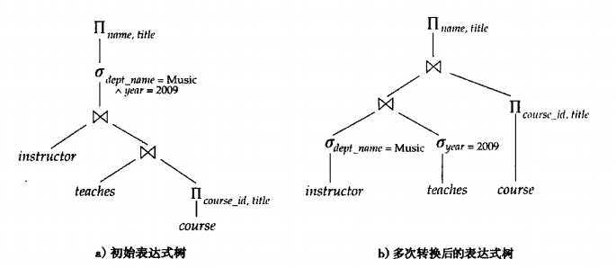
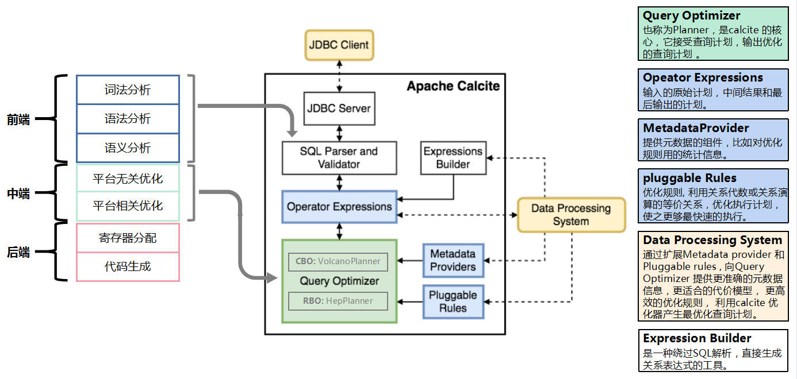

Ch01-Calcite 介绍
June 1, 2021
Apache Calcite 是一种提供了标准的 SQL 语言、多种查询优化和连接各种数据源基础框架，可以让用户轻松的接入各种数据，并实现使用 SQL 查询。此外，Calcite 还提供了 OLAP 和流处理的查询引擎。
1. Calcite 是什么 #
Calcite 之前的名称叫做 optiq，optiq 起初在 Hive 项目中，为 Hive 提供基于成本模型的优化，即 CBO（Cost Based Optimizatio）。2014 年 5 月 optiq 独立出来，成为 Apache 社区的孵化项目，2014 年 9 月正式更名为 Calcite。Calcite 项目的创建者是 Julian Hyde，他在数据平台上有非常多的工作经历，曾经是 Oracle、Broadbase 公司 SQL 引擎的主要开发者、SQLStream 公司的创始人和主架构师、Pentaho BI 套件中 OLAP 部分的架构师和主要开发者。现在他在 Hortonworks 公司负责 Calcite 项目，其工作经历对 Calcite 项目有很大的帮助。除了 Hortonworks，该项目的代码提交者还有 MapR、Salesforce 等公司，并且还在不断壮大。
Calcite 的目标是one size fits all，希望能为不同计算平台和数据源提供统一的查询引擎，并以类似传统数据库的访问方式（SQL 和高级查询优化）来访问 Hadoop 上的数据。Calcite 的架构有三个特点：flexible, embeddable, and extensible，就是灵活性、组件可插拔、可扩展，它的 SQL Parser 层、Optimizer 层等都可以单独使用，这也是 Calcite 受总多开源框架欢迎的原因之一。
2. 关系代数 #
关系代数是关系型数据库操作的理论基础，关系代数支持并、差、笛卡尔积、投影和选择等基本运算。关系代数也是 Calcite 的核心，任何一个查询都可以表示成由关系运算符组成的树。在 Calcite 中，它会先将 SQL 转换成关系表达式（relational expression），然后通过规则匹配（rules match）进行相应的优化，优化会有一个成本（cost）模型为参考。
| 名称 | 英文 | 符号 | 说明 |
|---|---|---|---|
| 选择 | select | σ | 类似于 SQL 中的 where |
| 投影 | project | Π | 类似于 SQL 中的 select |
| 并 | union | ∪ | 类似于 SQL 中的 union |
| 集合差 | set-difference | - | SQL 中没有对应的操作符 |
| 笛卡儿积 | Cartesian-product | × | 类似于 SQL 中不带 on 条件的 inner join |
| 重命名 | rename | ρ | 类似于 SQL 中的 as |
| 集合交 | intersection | ∩ | SQL 中没有对应的操作符 |
| 自然连接 | natural join | ⋈ | 类似于 SQL 中的 inner join |
| 赋值 | assignment | ← |
3. 查询优化 #
查询优化主要是围绕着 等价交换 的原则做相应的转换，这部分可以参考数据库系统概念（中文第六版）第 13 章——查询优化。这里举个简单的例子说明下

左图表示完整的一个原始的表达式树，如果将过滤条件 (SELECT) 下推，同时裁减相应的列 (PROJECT) 便可以的到右图所示的表达式树。在实际执行的时候，会极大的减少 IO 消耗以及中间结果产生的数据量。因此会有更高效的查询速度。
4. Calcite 概念 #
| 类型 | 描述 | 特点 |
|---|---|---|
| RelOptRule | transforms an expression into another。对 expression 做等价转换 | 根据传递给它的 RelOptRuleOperand 来对目标 RelNode 树进行规则匹配，匹配成功后，会再次调用 matches() 方法（默认返回真）进行进一步检查。如果 mathes() 结果为真，则调用 onMatch() 进行转换。 |
| ConverterRule | Abstract base class for a rule which converts from one calling convention to another without changing semantics. | 它是 RelOptRule 的子类，专门用来做数据源之间的转换（Calling convention），ConverterRule 一般会调用对应的 Converter 来完成工作，比如说：JdbcToSparkConverterRule 调用 JdbcToSparkConverter 来完成对 JDBC Table 到 Spark RDD 的转换。 |
| RelNode | relational expression，RelNode 会标识其 input RelNode 信息，这样就构成了一棵 RelNode 树 | 代表了对数据的一个处理操作，常见的操作有 Sort、Join、Project、Filter、Scan 等。它蕴含的是对整个 Relation 的操作，而不是对具体数据的处理逻辑。 |
| Converter | A relational expression implements the interface Converter to indicate that it converts a physical attribute, or RelTrait of a relational expression from one value to another. | 用来把一种 RelTrait 转换为另一种 RelTrait 的 RelNode。如 JdbcToSparkConverter 可以把 JDBC 里的 table 转换为 Spark RDD。如果需要在一个 RelNode 中处理来源于异构系统的逻辑表，Calcite 要求先用 Converter 把异构系统的逻辑表转换为同一种 Convention。 |
| RexNode | Row-level expression | 行表达式（标量表达式），蕴含的是对一行数据的处理逻辑。每个行表达式都有数据的类型。这是因为在 Valdiation 的过程中，编译器会推导出表达式的结果类型。常见的行表达式包括字面量 RexLiteral，变量 RexVariable，函数或操作符调用 RexCall 等。RexNode 通过 RexBuilder 进行构建。 |
| RelTrait | RelTrait represents the manifestation of a relational expression trait within a trait definition. | 用来定义逻辑表的物理相关属性（physical property），三种主要的 trait 类型是：Convention、RelCollation、RelDistribution； |
| Convention | Calling convention used to repressent a single data source, inputs must be in the same convention | 继承自 RelTrait，类型很少，代表一个单一的数据源，一个 relational expression 必须在同一个 convention 中； |
| RelTraitDef | 主要有三种：ConventionTraitDef：用来代表数据源 RelCollationTraitDef：用来定义参与排序的字段；RelDistributionTraitDef：用来定义数据在物理存储上的分布方式（比如：single、hash、range、random 等）； | |
| RelOptCluster | An environment for related relational expressions during the optimization of a query. | palnner 运行时的环境，保存上下文信息； |
| RelOptPlanner | A RelOptPlanner is a query optimizer: it transforms a relational expression into a semantically equivalent relational expression, according to a given set of rules and a cost model. | 也就是优化器，Calcite 支持RBO（Rule-Based Optimizer） 和 CBO（Cost-Based Optimizer）。Calcite 的 RBO （HepPlanner）称为启发式优化器（heuristic implementation ），它简单地按 AST 树结构匹配所有已知规则，直到没有规则能够匹配为止；Calcite 的 CBO 称为火山式优化器（VolcanoPlanner）成本优化器也会匹配并应用规则，当整棵树的成本降低趋于稳定后，优化完成，成本优化器依赖于比较准确的成本估算。RelOptCost 和 Statistic 与成本估算相关； |
| RelOptCost | defines an interface for optimizer cost in terms of number of rows processed, CPU cost, and I/O cost. | 优化器成本模型会依赖； |
5. Calcite 架构 #

Calcite 与传统数据库管理系统有一些相似之处，相比而言，它将数据存储、数据处理算法和元数据存储这些部分忽略掉了，这样设计带来的好处是：对于涉及多种数据源和多种计算引擎的应用而言，Calcite 因为可以兼容多种存储和计算引擎，使得 Calcite 可以提供统一查询服务，Calcite 将会是这些应用的最佳选择。
在 Calcite 架构中，最核心地方就是 Optimizer，也就是优化器，一个 Optimization Engine 包含三个组成部分：
- rules：也就是匹配规则，Calcite 内置上百种 Rules 来优化 relational expression，当然也支持自定义 rules；
- metadata providers：主要是向优化器提供信息，这些信息会有助于指导优化器向着目标（减少整体 cost）进行优化，信息可以包括行数、table 哪一列是唯一列等，也包括计算 RelNode 树中执行 subexpression cost 的函数；
- planner engines：它的主要目标是进行触发 rules 来达到指定目标，比如 RBO，CBO